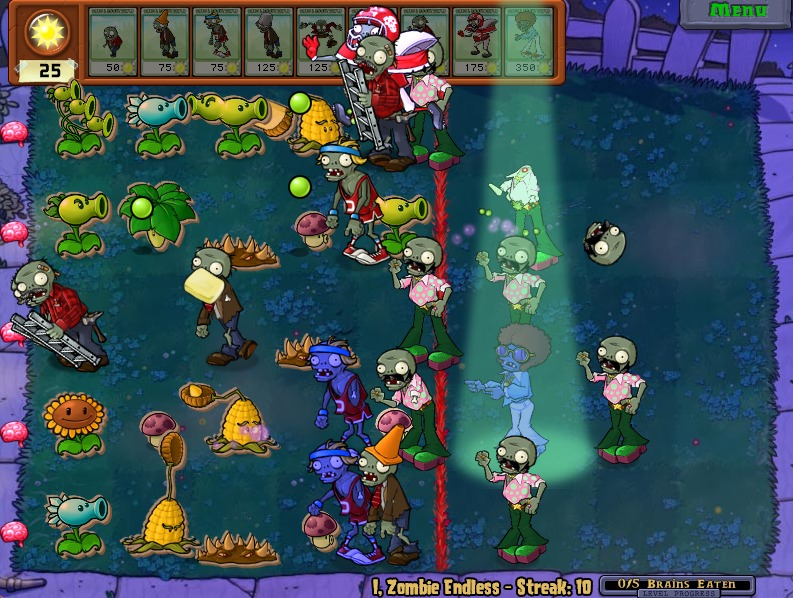
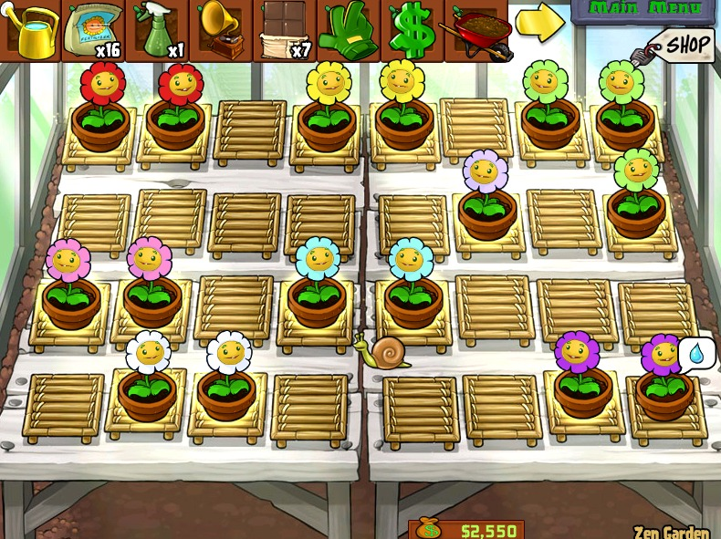
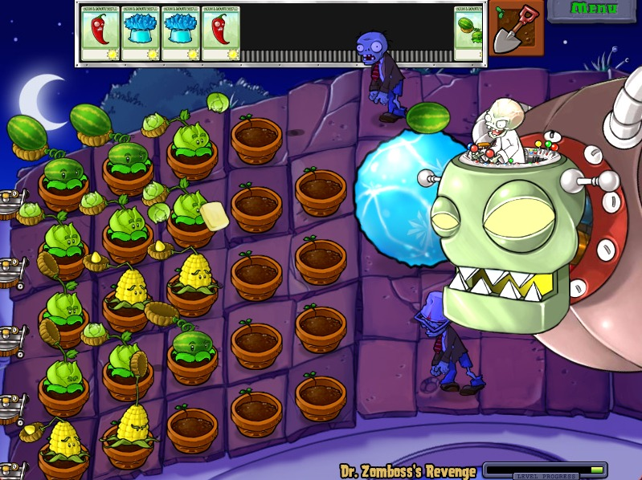

Plants vs. Zombies é aquele tipo de jogo que parece ter sido congelado no tempo da melhor forma possível. Mesmo depois de 16 anos, continua funcionando de maneira absurdamente divertida graças ao seu carisma único, identidade fortíssima e gameplay simples, mas muito cativante.
.jpeg)
Talvez a única melhoria realmente perceptível fosse acelerar um pouco o ritmo em alguns momentos, mas sinceramente? Nem isso chega a incomodar de verdade. O jogo quase te convida a sentar, relaxar e aproveitar enquanto os sóis caem lentamente e a trilha sonora fantástica acompanha cada partida de forma quase terapêutica.



Eu já havia zerado o jogo muitos anos atrás, mas decidi revisitá-lo agora na tentativa de conquistar a platina. E tirando alguns modos mais cansativos que funcionam quase como testes de paciência, foi simplesmente delicioso voltar para esse universo. Revisitar Plants vs. Zombies hoje também é perceber o quanto existe carinho em cada detalhe do projeto, desde os visuais até o humor e a criatividade de diversos modos extras para caso você canse um pouco na campanha.
“Plants vs. Zombies envelheceu como poucos jogos conseguem: simples, divertido e cheio de personalidade sem precisar reinventar nada.”
Mas bem, não vou me alongar muito nesse gramado, porque assim como o próprio jogo, ele sabe exatamente a hora de encerrar sua campanha e gameplay. Sem as bagatelas de hoje em dia, onde qualquer acréscimo em jogabilidade, modos ou conteúdo parece custar um órgão, aqui podemos dizer que jogos eram feitos simplesmente para serem jogos: artes focadas em entregar uma experiência pura e divertida ao jogador. E talvez seja justamente por isso que Plants vs. Zombies tenha se tornado um fenômeno atemporal, praticamente impossível de ser desconhecido por qualquer pessoa que tenha interagido com o mundo gamer na última década.
✔ O QUE É BOM
- Direção artística extremamente carismática e memorável
- Trilha sonora relaxante e cheia de personalidade
- Gameplay simples, acessível e viciante até hoje
✖ O QUE NÃO É BOM
- Ritmo mais lento pode cansar em sessões longas
Discussão e Opiniões